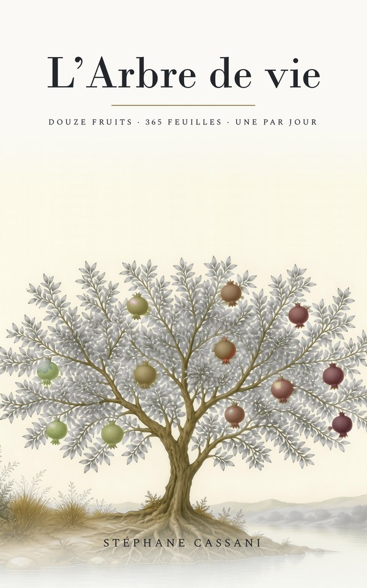

Le fichier .m4b contient les chapitres : ouvrez-le dans une application de livres audio (Apple Livres, Smart AudioBook Player, VLC…) pour passer de l'un à l'autre. Écrit et lu par Stéphane Cassani (voix clonée avec ElevenLabs). Chaque fruit est un chapitre ; à l’intérieur, les trente et une feuilles se suivent dans l’ordre du livre.
Laissez votre adresse : vous recevrez un message quand un nouveau livre audio paraît, et rien d’autre. Une ligne suffit pour vous désinscrire. Le téléchargement reste libre, sans inscription.